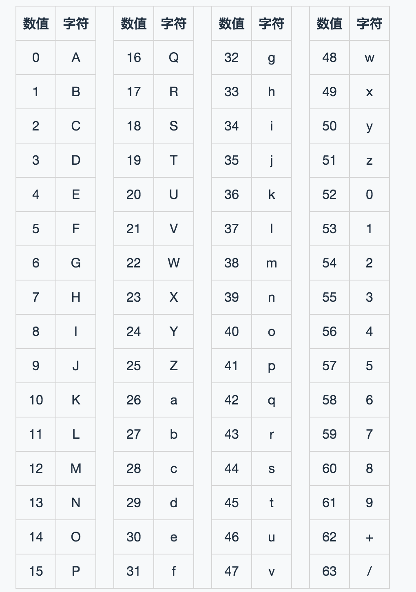
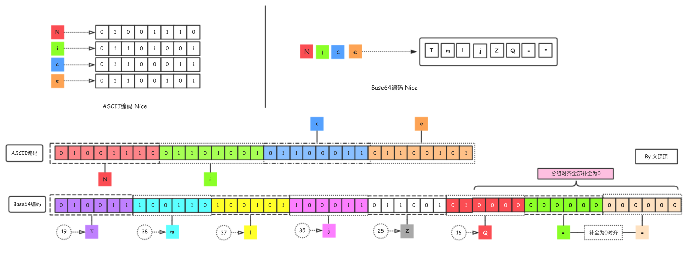
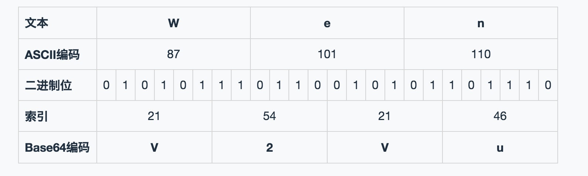

本文科普数据处理中常用的Base64相关知识，包括Base64编码方案的内部细节、特征及应用，文章末还提供了iOS和JavaScript版本的Base64编码和解码方案。
Base64编码方案介绍 Base64是一种基于64个可打印字符来表示二进制数据的表示方法，简单点说就是Base64编码方案可以使用由64个指定字符的排列组合方式来表示所有的二进制数据。Base64可以用作电子邮件的传输编码，常用于处理(表示、传输和存储)文本数据的业务场景中，在网络安全数据处理方面有应用。
下面我们使用电脑中的命令行工具先简单感受下Base64的编码方式（我自己使用的Mac OSX系统的终端，如果是windows操作系统可以下载Git终端工具 ）。
① 编码文件
1 2 3 4 5 6 7 8 9 10 11 12 13 14 15 16 17 18 19 20 21 22 23 24 25 26 27 28 29 30 31 32 wendingding:Demo wendingding$ base64 123.png -o 123.text wendingding:Demo wendingding$ cat 123.text iVBORw0KGgoAAAANSUhEUgAAABIAAAAOCAYAAAAi2ky3AAAEGWlDQ1BrQ0dDb2xvclNwYWNlR2VuZXJpY1JHQgAAO I2NVV1oHFUUPrtzZyMkzlNsNIV0qD8NJQ2TVjShtLp/3d02bpZJNtoi6GT27s6Yyc44M7v9oU9FUHwx6psUxL+3gC Ao9Q/bPrQvlQol2tQgKD60+INQ6Ium65k7M5lpurHeZe58853vnnvuuWfvBei5qliWkRQBFpquLRcy4nOHj4g9K5C Eh6AXBqFXUR0rXalMAjZPC3e1W99Dwntf2dXd/p+tt0YdFSBxH2Kz5qgLiI8B8KdVy3YBevqRHz/qWh72Yui3MUDE L3q44WPXw3M+fo1pZuQs4tOIBVVTaoiXEI/MxfhGDPsxsNZfoE1q66ro5aJim3XdoLFw72H+n23BaIXzbcOnz5mfP oTvYVz7KzUl5+FRxEuqkp9G/Ajia219thzg25abkRE/BpDc3pqvphHvRFys2weqvp+krbWKIX7nhDbzLOItiM8358 pTwdirqpPFnMF2xLc1WvLyOwTAibpbmvHHcvttU57y5+XqNZrLe3lE/Pq8eUj2fXKfOe3pfOjzhJYtB/yll5SDFcS DiH+hRkH25+L+sdxKEAMZahrlSX8ukqMOWy/jXW2m6M9LDBc31B9LFuv6gVKg/0Szi3KAr1kGq1GMjU/aLbnq6/lR xc4XfJ98hTargX++DbMJBSiYMIe9Ck1YAxFkKEAG3xbYaKmDDgYyFK0UGYpfoWYXG+fAPPI6tJnNwb7ClP7IyF+D+ bjOtCpkhz6CFrIa/I6sFtNl8auFXGMTP34sNwI/JhkgEtmDz14ySfaRcTIBInmKPE32kxyyE2Tv+thKbEVePDfW/b yMM1Kmm0XdObS7oGD/MypMXFPXrCwOtoYjyyn7BV29/MZfsVzpLDdRtuIZnbpXzvlf+ev8MvYr/Gqk4H/kV/G3csd azLuyTMPsbFhzd1UabQbjFvDRmcWJxR3zcfHkVw9GfpbJmeev9F08WW8uDkaslwX6avlWGU6NRKz0g/SHtCy9J30o /ca9zX3Kfc19zn3BXQKRO8ud477hLnAfc1/G9mrzGlrfexZ5GLdn6ZZrrEohI2wVHhZywjbhUWEy8icMCGNCUdiBl q3r+xafL549HQ5jH+an+1y+LlYBifuxAvRN/lVVVOlwlCkdVm9NOL5BE4wkQ2SMlDZU97hX86EilU/lUmkQUztTE6 mx1EEPh7OmdqBtAvv8HdWpbrJS6tJj3n0CWdM6busNzRV3S9KTYhqvNiqWmuroiKgYhshMjmhTh9ptWhsF7970j/S bMrsPE1suR5z7DMC+P/Hs+y7ijrQAlhyAgccjbhjPygfeBTjzhNqy28EdkUh8C+DU9+z2v/oyeH791OncxHOs5y2A tTc7nb/f73TWPkD/qwBnjX8BoJ98VQNcC+8AAAAkSURBVCgVY2RkZPzPQAXARAUzwEaMGkQ4JEfDaDSMCIcAYRUAP hgBHp0GsDQAAAAASUVORK5CYII= wendingding:Demo wendingding$ base64 123.text -D -o new.png wendingding:Demo wendingding$ tree -L 2 . ├── 123.png ├── 123.text └── new.png wendingding:Demo wendingding$ md5 123.png MD5 (123.png) = 314e5198b3d2da9fbfb0d85c398bcbe2 wendingding:Demo wendingding$ md5 new.png MD5 (new.png) = 314e5198b3d2da9fbfb0d85c398bcbe2
在上面的演示中我们首先对Demo文件目录下的123.png文件（图片）进行base64编码，把结果保存到123.text文件后又对123.text文件进行base64解码操作，并最终匹配解码后得到的文件和源文件。
命令行说明
$ base64 123.png -o 123.text 表示对当前目录下的123.png图片进行base64编码结果保存到123.text。$ cat 123.text 表示列出123.text文件中的文本内容。$ base64 123.text -D -o new.png 表示对123.text文件进行base64解码，结果保存为new.png文件。$ md5 123.png 表示对123.png原文件进行md5散列计算，得到唯一散列值。$ md5 new.png 表示对new.png解码后的文件进行md5散列计算，得到唯一散列值。
② 编码字符串
1 2 3 4 wendingding:Source wendingding$ echo -n "我失去了一只臂膀，就睁开一只眼睛" | base64 5oiR5aSx5Y675LqG5LiA5Y+q6IeC6IaA77yM5bCx552B5byA5LiA5Y+q55y8552b wendingding:Source wendingding$ echo -n "5oiR5aSx5Y675LqG5LiA5Y+q6IeC6IaA77yM5bCx552B5byA5LiA5Y+q55y8552b" | base64 -D 我失去了一只臂膀，就睁开一只眼睛
Base64可以对任意的二进制数据进行编码，不论原数据是什么样的（可以是图片、视频、文本、字符串等）编码后我们得到的总是一个由众多字符组成的字符串，而且Base64是可逆的。
Base64编码后得到的字符串由64位字符排列组合而成，这64位字符分别是：字母A-Z、a-z、数字0-9、+和/ ,下面列出Base64的索引表（摘自Base64维基百科 ）。

**注意** 在进行编码的时候因为可能出现要编码的字节数不能被3整除的情况，所以实际编码得到的字符串文本中还可能出现特殊字符=符号。
Base64的编码策略 编码 我们在写代码的时候直接面对处理的数据通常是文字、图像和声音等信息，计算机在操作的时候，要知道它们操作的对象并不是这些物化的具体的文字|声音|视频等内容，而是无差别的由0和1排列组合而成的比特序列。将现实世界中的内容映射成为比特序列的操作被称为编码（encoding） ，常见的编码方案有ASCII 、GB2312(简体中文)和UTF-8等等，Base64也是其中的一种。
我们知道**ASCII编码（American Standard Code for Information Interchange，美国信息互换标准代码）**这种通用的单字节编码系统中一共规定了128位字符，在具体进行编码的时候使用每8位一组的方式(即每个字符都使用八位的二进制数据来进行表示，注意这里实际只使用了7位，最前面的1位统一规定为0)来表示128种可能的字符。
字节(Byte)是计算机技术中用于计量存储容量的一种计量单位，1字节等于8位(Bit)，即1 Byte = 8 Bit 。每1位可以存储0或1，表示两种状态。因为1个字节中拥有8位，每位存储的数据要么是0要么是1，所以1字节可以表示的数据范围为00000000~11111111，即2^8。
举个例子，如果我们需要处理Nice这个字符串单词，那么计算机使用不同的编码模式得到的比特序列结果是不一样的，下面给出ASCII编码和Base64编码的情况做对照。

Base64在对字符进行连续编码的时候，总是以24位(3 x 8 = 24，3字节)为最小单位进行处理，把24位的数据以6位一组拆分为4组，把每一组的6位转换为二进制数据后查找Base64对应的索引表得到编码后的字符 ,Base64编码后的数据比原文数据略长一些，大概是原文的4/3。为了帮助理解，下面给出了对Wen这三个字符进行base64编码的处理过程。

说明 Wen三个字符在ASCII中刚好占3个字节，使用3 X 8 = 24位二进制数据表示。我们先获取三个字符在ASCII编码中对应的十进制数字，分别为87、101和110，转换为二进制数据表示为：01010111 01100101 01101110 ，然后把这24位二进制数据按照6位一组拆分为4组，即010101 110110 010101 101110 ，转换为十进制的数字对应为21、54、21和46 ，在base64索引表中查找对应的字符，最终得到V2Vu。
关于结尾补齐的特殊处理 如果要编码的字节数不能被3整除，最后会多出1个或2个字节，那么在处理的时候会先使用0字节值在末尾补足，使其能够被3整除，然后再进行Base64的编码，在进行编码的时候如果进行了补齐且最后6位全部为0那么转换为=符号 ，下面以Yu这两个字符实例演示base64的处理过程。
我们刚刚给出了Wen和Yu的base64编码案例，下面使用终端命令行进行验证。
1 2 3 4 5 6 7 8 wendingding:Source wendingding$ echo -n "Wen" | base64 V2Vu wendingding:Source wendingding$ echo -n "V2Vu" | base64 -D Wen wendingding:Source wendingding$ echo -n "Yu" | base64 WXU= wendingding:Source wendingding$ echo -n "WXU=" | base64 -D Yu
这里推荐一个base64编码和解码的在线网站 ，大家可以使用该网站来进行验证。
** 下面总结Base64编码的处理过程 **
❒ 将所有字符转化为ASCII码；
Base64编码和解密的代码实现 ① iOS开发 在iOS开发中，从iOS7.0 开始，苹果就提供了base64的编码和解码支持，如果是<7.0的老项目也许您还能看到base64编码和解码的第三方框架，如果当前代码不再需要对iOS7.0以下版本提供支持，则建议使用新的API来进行替换。下面给出两个封装好的方法，其中base64EncodeString用于对字符串进行base64编码，base64DecodeString用于解码操作。
1 2 3 4 5 6 7 8 9 10 11 12 13 14 15 16 17 18 19 20 21 - (NSString *) base64EncodeString:(NSString *)string { NSData *data = [string dataUsingEncoding:NSUTF8StringEncoding ]; return [data base64EncodedStringWithOptions:0 ]; } - (NSString *) base64DecodeString:(NSString *)string{ NSData *data = [[NSData alloc]initWithBase64EncodedString:string options:0 ]; return [[NSString alloc]initWithData:data encoding:NSUTF8StringEncoding ]; }
② 前端开发 在浏览器环境中，JavaScript提供两个方法来处理Base64编码和解码操作：btoa方法将字符串或二进制值转化为Base64编码，atob方法将Base64编码转化为原来的编码。需要说明的是，在进行使用这些方法进行编码和解码的时候需要考虑到非ASCII码字符的情况，如果是非ASCII码字符那么需要插入浏览器转码的操作。
1 2 3 4 5 6 7 8 9 10 11 function base64Encode ( str ) return window .btoa(unescape (encodeURIComponent ( str ))); } function base64Decode ( str ) return decodeURIComponent (escape (window .atob( str ))); } base64Encode('Yu Hui：江湖再见！' ); base64Decode("WXUgSHVp77ya5rGf5rmW5YaN6KeB77yB" );
Base64相关参考
RFC 1421：https://tools.ietf.org/html/rfc1421 https://tools.ietf.org/html/rfc3548 https://zh.wikipedia.org/wiki/Base64